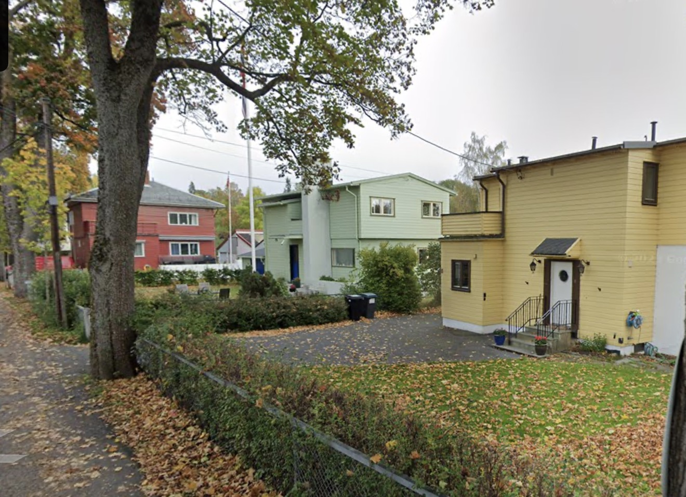
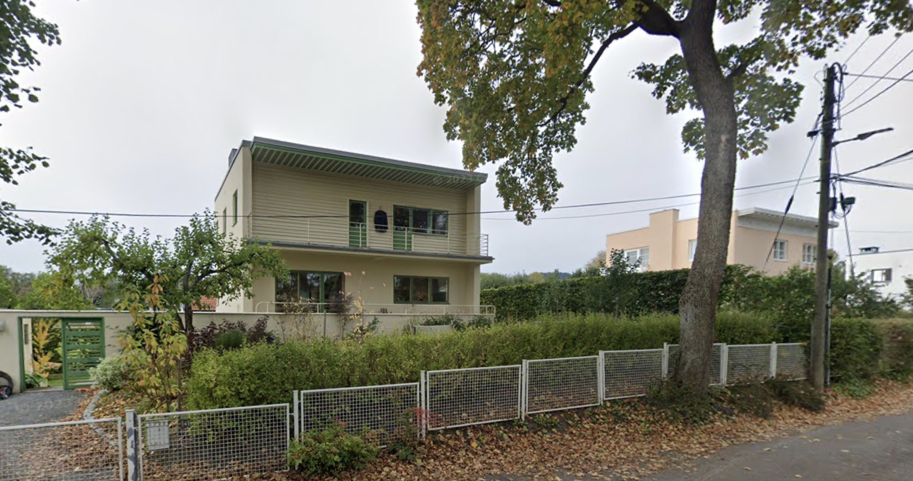
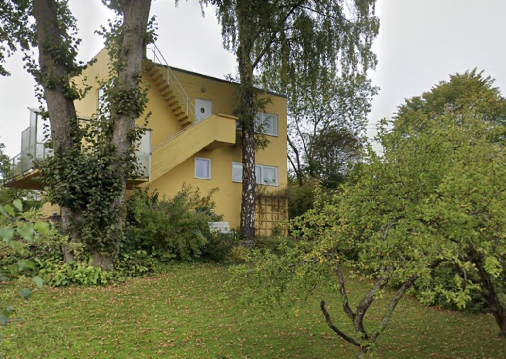

In the late 1920s, a new idea arrived in Norway from the south. It had come through the Bauhaus, through Le Corbusier, through the 1927 Weissenhof exhibition in Stuttgart — and it said, simply, that a building should be exactly what it needs to be and nothing more. Flat roofs. White render. Windows as wide as the light required. Form derived from function. The Norwegians called it funksjonalisme, and they took to it with quiet conviction.
The man who became its Oslo master was Arne Korsmo. Where other architects adopted the vocabulary, Korsmo understood the grammar. His buildings are rational but never cold, stripped but never bare — they have a clarity that only accumulates in value as you stand in front of them. This tour visits four buildings that define his legacy — and one by his most gifted student.
We start at Havna Allé 15, where Oslo's first functionalist housing development still stands largely as Korsmo designed it in 1930–32: a serene cul-de-sac of flat-roofed concrete villas with clean lines and no ornamentation, built when such ideas were genuinely radical on these streets. From here we ride to Villa Stenersen on Tuengen allé 10C — Korsmo's 1937–39 masterpiece, an open-plan villa of extensive glazing and a rooftop terrace built for art collector Rolf Stenersen. The National Museum now preserves it as a prime example of integrated modernism. It is the finest room in Oslo to stand inside and understand what functionalism was actually trying to say.
We continue to Planetveien, where Korsmo built not one house but three — numbers 12, 14 and 16 — between 1952 and 1955. His own home is among them. Set on a steep hillside, these wooden-and-glass structures blend functionalist clarity with a warmth and site-sensitivity that marks Korsmo's later thinking: less manifesto, more inhabitation. The fjord views from the slope are extraordinary.
Our final stop is Skådalsveien 33 — the School for Deaf Children designed by Sverre Fehn, Korsmo's most distinguished pupil, between 1971 and 1977. It is a brick-and-concrete building embedded quietly into the hillside, using spatial form, light and acoustics in ways tailored precisely to its users. Where Korsmo's buildings announce themselves, Fehn's listens. It is a poetic evolution of everything the tradition began — and a fitting place to end.



The tour visits five key sites in Oslo's Nordic functionalist legacy: Havna Allé (Korsmo, 1930–32) — Oslo's first functionalist housing development, a serene cul-de-sac of flat-roofed concrete villas; Villa Stenersen (Korsmo, 1937–39) — an open-plan villa built for art collector Rolf Stenersen, now preserved by the National Museum; Planetveien 12 (Korsmo, 1955); Villa Dammann (1930–32); and Skådalen School (Sverre Fehn, 1977) — one of Norway's greatest architects working at his most considered.
Nordic functionalism emerged in the late 1920s and 1930s as Scandinavian architects adopted the clean lines, flat roofs and open plans of European modernism and filtered them through a northern sensibility — less dogmatic, more liveable, deeply concerned with light and landscape. Oslo became an important centre for the movement partly through architects like Arne Korsmo, who studied and corresponded with the leading figures of European modernism and brought those ideas back to Norwegian domestic architecture.
No. The tour is built around storytelling — who commissioned these buildings, what they were trying to say, what was radical about them at the time, and how they sit in their streets today. Guests with no architecture background consistently find it one of the most engaging tours in the programme. An interest in history, design or cities is all you need.
The buildings visited are private residences or protected structures, so interiors are not part of the tour. Your guide will take you as close as public access allows and bring the architecture alive through explanation, photographs and context. Villa Stenersen's interior can occasionally be visited through the National Museum's programme — worth checking if it is a particular interest.
They are similar in distance and effort — both are 30 km or under on paved roads with gentle terrain, suitable for all fitness levels. The difference is entirely in focus. City Highlights is a broad survey of Oslo's famous landmarks; the Architecture Tour is a slow, deliberate exploration of a specific chapter in design history. Some guests do City Highlights on day one to get oriented, then the Architecture Tour on day two.